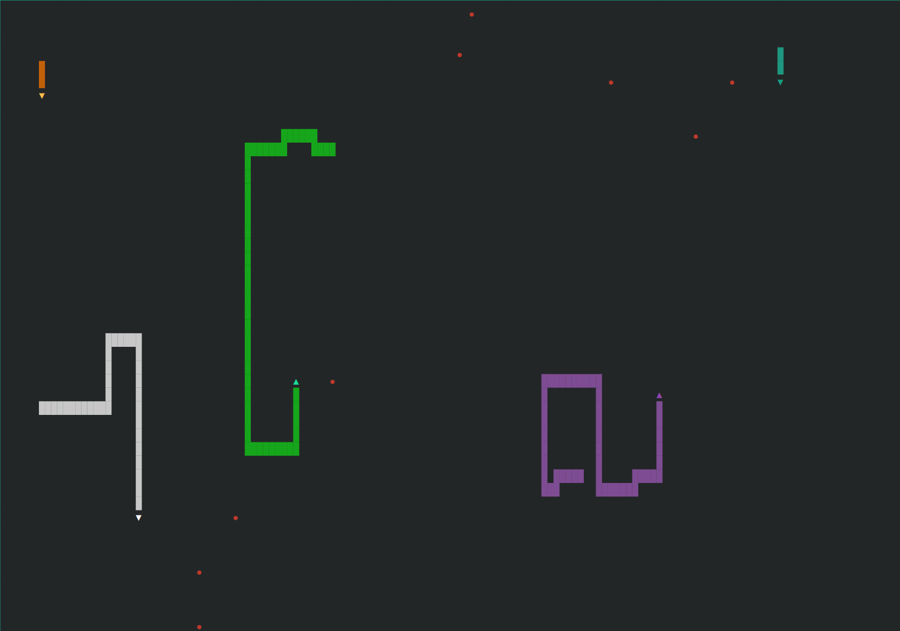

Human Mode
Classic snake controlled with arrow keys or WASD. Configurable board size (small / medium / large) and fruit count (1 / 3 / 5).
Terminal snake game with human, AI bot, and fullscreen screensaver modes. Zero dependencies — pure Python stdlib. Features BFS pathfinding with tail-chase survival, a three-strategy AI cascade, and a screensaver mode with 5 competing AI snakes across your full terminal.

Each mode targets a different use case — from interactive play to a fully autonomous visual demo.
Classic snake controlled with arrow keys or WASD. Configurable board size (small / medium / large) and fruit count (1 / 3 / 5).
Single AI snake running the three-strategy cascade — BFS to fruit, tail-chase survival, any-safe-move fallback. Auto-restarts on death.
5 color-coded AI snakes competing across the full terminal with 25 fruits, head-danger lookahead for collision avoidance, and automatic respawning.
Each bot runs a three-strategy cascade every tick — falling through to the next strategy only when the current one fails.
BFS to the nearest fruit. Before committing, simulates the full path and verifies the snake can still reach its own tail — preventing self-trapping in dead ends.
If no safe fruit path exists, follow the tail to stay in open space. Keeps the snake moving without committing to a path that closes off future options.
Last resort — any direction that doesn't immediately cause death. Triggered only when both BFS and tail-chase are unavailable.
In screensaver mode each bot also computes a head-danger zone — every cell any other snake's head could occupy next tick. Routes around it with soft avoidance, falling back to ignoring danger only if no safe path exists. This prevents head-on collisions between competing snakes.
Zero install — clone and run. Python 3.6+ and a UTF-8 terminal is all that's needed.
↑ ↓ ← → or W A S D
R
Q
Building TSnake meant working directly with terminal I/O, raw input handling, and non-blocking keyboard reads without any libraries to abstract the complexity. The AI implementation required thinking carefully about graph traversal, look-ahead simulation, and multi-agent collision avoidance — problems that are small enough to be tractable but deep enough to require real algorithmic thought. The result is a zero-dependency project that demonstrates Python fundamentals, algorithm design, and terminal rendering from scratch.